NEW JPG LRPT from MeteoR-M2 hier
СВЕЖИЕ КАРТИНКИ 2021 c NOAA и LRPT с MeteoR-M2 ЗДЕСЬ
Планета Земля - фотообои 2020г
!!! погода напрямую из космоса с Метеор-М2
(сигнал из космоса пойман лично на УКВ
антенну
и бытовой тв усилитель,
подробности о том как ловить смотрим
тут .)
ширина снимков 1280 х 1024 т к хотел чёткости "точка в точку",
для FullHD
нехватает ширины чуток...
кликабельно - скачивайте на здоровье :-)
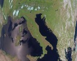
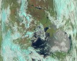
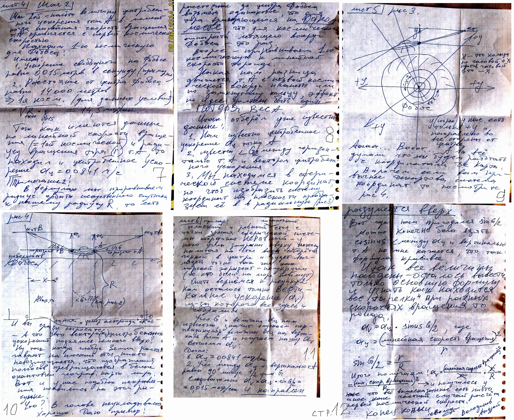
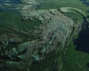
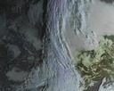
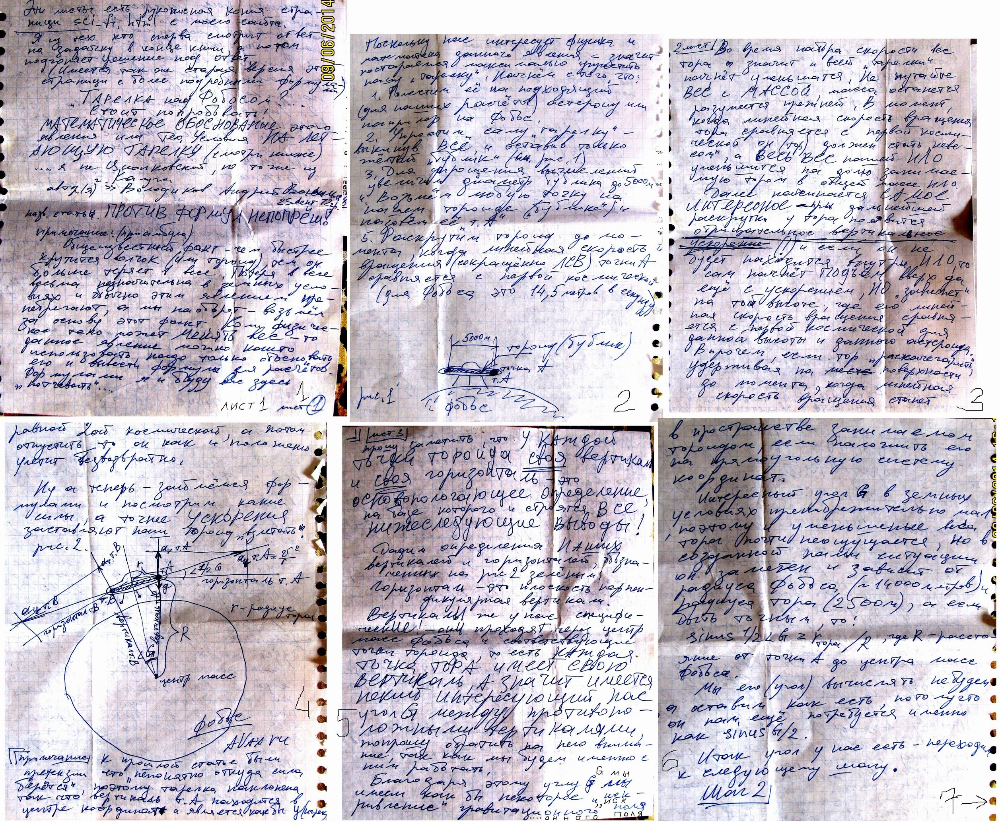
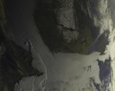
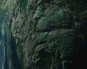
Ниже можно посмотреть полноразмерные сканы Метеор-М2 2019г
так сказать "погода в исходном виде"
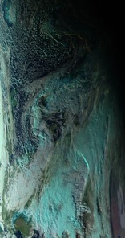
 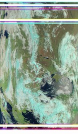
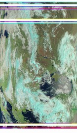
 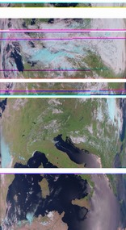
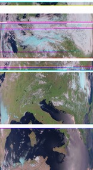

И такое поймать может каждый! Без тарелки! :-)))
снимки проф. чёткости
поклон и огромное СПАСИБО за LRPT метеоснимки погоды МетеоРу

 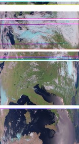
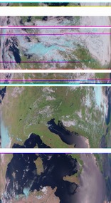